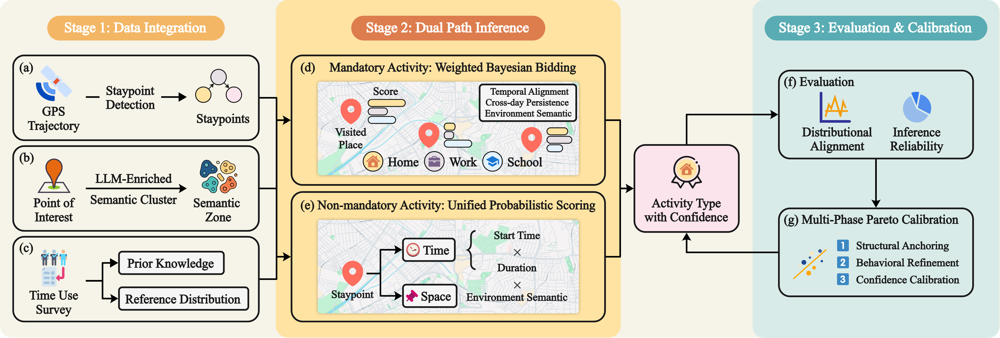

Policy, Infrastructure, and Trustworthy Mobility AI
2021 - Present | Decision Support for Electrification, Resilience, and Safe AI Mobility Systems
Project Overview
This direction translates mobility AI into operational policy decisions. It combines market-level EV policy modeling, post-disaster logistics optimization, regulation-aware autonomous decision systems, and trustworthy multimodal mobility intelligence.
Motivation
Transportation decisions require more than predictive accuracy. They need interpretable models that can be audited, stress-tested, and mapped to concrete policy levers, infrastructure plans, and safety constraints.
Goal
Deliver decision-grade mobility intelligence that supports electrification strategy, disaster-response planning, and trustworthy AI deployment in high-stakes transportation settings.
Direction Narrative
Policy sensitivity for EV transition
EV adoption and charging deployment are modeled as a two-sided market feedback system, enabling quantitative policy scenario testing under infrastructure constraints.
Resilience operations for post-disaster recovery
Queue-aware scheduling models are used to optimize debris removal under uncertain and dynamically evolving disaster conditions.
Trustworthy AI for safety-critical mobility systems
Regulation-aware reasoning and multimodal benchmark datasets support interpretable autonomous decision pipelines and more robust cooperative mobility intelligence.

Results
- EV policy modeling in LA County estimates that a 1% increase in EV charging stations is associated with around 0.35% increase in EV sales.
- Debris logistics analysis indicates potential reduction from around 742 days to around 263 days under 24-hour operation scenarios.
- DriveReg contributes an interpretable regulation-aware decision framework for autonomous driving compliance and safety reasoning.
- V2X-Real contributes a large-scale cooperative perception benchmark for real-world multimodal V2X research.
Impact
This direction strengthens evidence-based transportation policy and operations by making AI outputs explainable, scenario-aware, and directly tied to implementation decisions.
Representative Publications
- A Two-Sided Model for EV Market Dynamics and Policy Implications
- Multi-period Truck Scheduling with Queueing for Postdisaster Debris Removal
- Driving with Regulation: Trustworthy and Interpretable Decision-Making for Autonomous Driving
- V2X-Real: A Large-Scale Dataset for Vehicle-to-Everything Cooperative Perception
- Semantic Trajectory Data Mining with LLM-Informed POI Classification